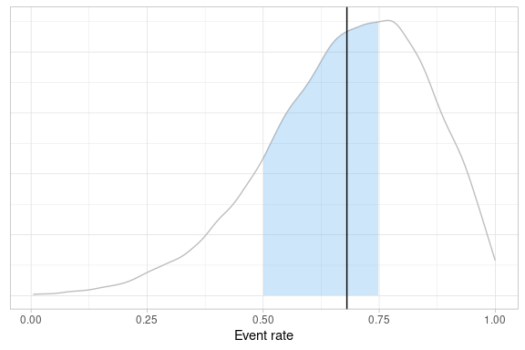
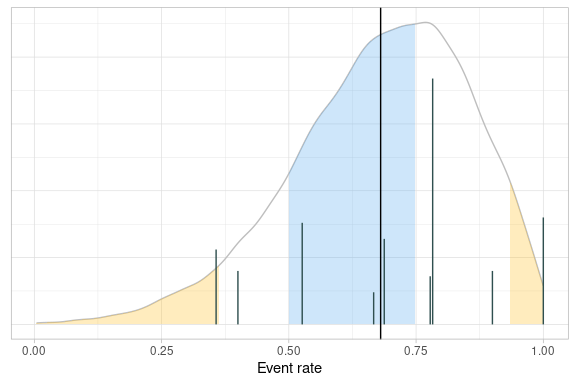

Introduction
The purpose of the rbqmR package is to provide a repository of r-based tools for the implementation of risk-based quality management.
Tools currently exist for
- Dynamic Quality Tolerance Limits (QTLs) using Bayesian Hierarchical Models (ongoing)
- Observed-Minus-Expected methodology
- Observed/Expected methodology (ongoing)
This package is a work-in-progress. It’s primary focus is dynamic QTLs. Other methodologies are included for completeness.
Installation
You can install the development version of rbqmR from GitHub with:
# install.packages("devtools")
devtools::install_github("openpharma/rbqmR")Dynamic QTLs
We use example 2.7 of Berry et al (Berry SM 2011), described on pages 52 to 63, modifying the context so that rather than being a meta analysis of several different trials, we consider the data to represent the performance of different sites within a single trial. The exact metric being measured is immaterial, though it remains a summary of a binomial outcome.
| Site | Subjects | Events | ObservedResponse |
|---|---|---|---|
| 1 | 20 | 20 | 1.00 |
| 2 | 10 | 4 | 0.40 |
| 3 | 16 | 11 | 0.69 |
| 4 | 19 | 10 | 0.53 |
| 5 | 14 | 5 | 0.36 |
| 6 | 46 | 36 | 0.78 |
| 7 | 10 | 9 | 0.90 |
| 8 | 9 | 7 | 0.78 |
| 9 | 6 | 4 | 0.67 |
The central tenet of the QTL methodology implemented in rbqmR is not that a current trial should behave in a similar fashion to a “similar” historical or control trial, but rather that all sites within the current trial should behave in a similar way. The justification for this assumption is that the trial’s inclusion/exclusion criteria are designed to minimise heterogeneity amongst the study population (save for that induced by differences in treatment in comparative trials).
We fit the Bayesian Hierarchical Model described by Berry et al …
fitted <- berrySummary %>%
fitBayesBinomialModel(n = Subjects, r = Events)
#> Loading required namespace: rjags
fitted
#> $tab
#> # A tibble: 20,000 × 4
#> p a b q
#> <dbl> <dbl> <dbl> <int>
#> 1 0.957 6.58 2.89 98
#> 2 0.825 7.55 3.00 79
#> 3 0.556 6.48 2.45 23
#> 4 0.886 6.05 1.96 90
#> 5 0.747 7.67 3.38 62
#> 6 0.686 9.06 3.56 48
#> 7 0.689 6.61 3.24 49
#> 8 0.522 6.73 3.43 18
#> 9 0.596 6.36 3.86 30
#> 10 0.701 7.17 3.10 52
#> # … with 19,990 more rows
#>
#> $results
#>
#> JAGS model summary statistics from 20000 samples (chains = 2; adapt+burnin = 5000):
#>
#> Lower95 Median Upper95 Mean SD Mode MCerr MC%ofSD SSeff
#> p[10] 0.36511 0.69686 0.99238 0.67978 0.16999 -- 0.0013547 0.8 15746
#> a 2.258 6.0665 9.974 6.0156 2.3002 -- 0.058922 2.6 1524
#> b 0.65735 2.698 5.2671 2.8445 1.2772 -- 0.034558 2.7 1366
#>
#> AC.10 psrf
#> p[10] -0.0029928 1.0003
#> a 0.23967 1.0013
#> b 0.26633 1.0013
#>
#> Total time taken: 3.3 seconds
#>
#>
#> $status
#> [1] "OK"… and use the quantiles of the posterior distribution of the probability of an event to define the QTLs for this metric. This can be done in isolation (when the trial acts as its own control) or with reference to historical data obtained from similar previous studies.
Examples of QTL evaluation rules
When using a Bayesian Hierarchical Model, the probabilities associated with credible intervals are generally lower than those associated with similar frequentist models. This is because BHMs permit more sources of variation. Here, the BHM permits variation between the response rates at different sites, even when considering the overall event rate for the study. The corresponding frequentist analysis assumes that all sites share common event rate, thus assuming there is no inter-site variation.
Comparison to constant value(s)
The evaluatePointEstimateQTL allows the comparison of an arbitrary scalar summary statistic (which defaults to the mean) derived from the estimate of the posterior distribution, with an arbitrary number of lower and upper limits.
For example, the code below defines a QTL based on the mean of the posterior distribution of the probability of an event. Call this probability . The warning limits are 0.5 and 0.8. The action limits are 0.4 and 0.9.
berrySummary %>%
evaluatePointEstimateQTL(
posterior = fitted$tab,
metric = p,
observedMetric = ObservedResponse,
lower = c("warn" = 0.5, "action" = 0.4),
upper = c("warn" = 0.8, "action" = 0.9)
)
#> $status
#> [1] "OK"
#>
#> $qtl
#> [1] 0.6797793
#>
#> $data
#> # A tibble: 9 × 5
#> Site Subjects Events ObservedResponse Status
#> <int> <dbl> <dbl> <dbl> <chr>
#> 1 1 20 20 1 action
#> 2 2 10 4 0.4 warn
#> 3 3 16 11 0.688 OK
#> 4 4 19 10 0.526 OK
#> 5 5 14 5 0.357 warn
#> 6 6 46 36 0.783 OK
#> 7 7 10 9 0.9 warn
#> 8 8 9 7 0.778 OK
#> 9 9 6 4 0.667 OKAs with all evaluateXXXXQTL functions, the return value of evaluatePointEstimateQTL is a list. The status element indicates whether or not the QTL’s limits have been breached. The qtl element gives the calculated value of the QTL metric and the data element returns a copy of the data.frame containing the site level KRIs augmented with a column indicating which, if any, of the various limits were breached by that site.
Both the lower and upper parameters are optional (though at least one must be given) and the number of limits, and their labels, are arbitrary.
berrySummary %>%
evaluatePointEstimateQTL(
posterior = fitted$tab,
metric = p,
observedMetric = ObservedResponse,
upper = c("mild" = 0.6, "moderate" = 0.8, "severe" = 0.9)
)If only one limit is defined, this can be provided as a scalar, in which case it is labelled action.
The function on which the QTL is based is specified by the stat parameter of evaluatePointEstimateQTL and can be a user-defined function. For example, the following code fragments define QTLs based on the median
berrySummary %>%
evaluatePointEstimateQTL(
posterior = fitted$tab,
metric = p,
stat = median,
observedMetric = ObservedResponse,
upper = c("warn" = 0.7, "action" = 0.9)
)
#> $status
#> [1] "OK"
#>
#> $qtl
#> [1] 0.6968642
#>
#> $data
#> # A tibble: 9 × 5
#> Site Subjects Events ObservedResponse Status
#> <int> <dbl> <dbl> <dbl> <chr>
#> 1 1 20 20 1 action
#> 2 2 10 4 0.4 OK
#> 3 3 16 11 0.688 OK
#> 4 4 19 10 0.526 OK
#> 5 5 14 5 0.357 OK
#> 6 6 46 36 0.783 warn
#> 7 7 10 9 0.9 warn
#> 8 8 9 7 0.778 warn
#> 9 9 6 4 0.667 OKand 10th centile of the posterior distribution of .
berrySummary %>%
evaluatePointEstimateQTL(
posterior = fitted$tab,
metric = p,
stat = function(x) quantile(x, probs = 0.1),
observedMetric = ObservedResponse,
upper = c("warn" = 0.3, "action" = 0.8)
)
#> $status
#> [1] "warn"
#>
#> $qtl
#> 10%
#> 0.4507215
#>
#> $data
#> # A tibble: 9 × 5
#> Site Subjects Events ObservedResponse Status
#> <int> <dbl> <dbl> <dbl> <chr>
#> 1 1 20 20 1 action
#> 2 2 10 4 0.4 warn
#> 3 3 16 11 0.688 warn
#> 4 4 19 10 0.526 warn
#> 5 5 14 5 0.357 warn
#> 6 6 46 36 0.783 warn
#> 7 7 10 9 0.9 action
#> 8 8 9 7 0.778 warn
#> 9 9 6 4 0.667 warnBased on the probability that the derived metric is in a given range
Suppose previous experience tells us that the event probability in this type of study should be between 0.50 and 0.75. We define the QTL such that we require the posterior event probability for a new participant to be in the range 0.5 to 0.75 inclusive to be at least 60%, with a warning limit of 80%. Individual sites are flagged if their response rate is either below 40% or above 85%.
qtlProbInRange <- berrySummary %>%
evaluateProbabilityInRangeQTL(
posterior = fitted$tab,
metric = p,
observedMetric = ObservedResponse,
range = c(0.5, 0.75),
probs = c("warn" = 0.8, "action" = 0.6),
lower = 0.4,
upper = 0.85
)
qtlProbInRange
#> $status
#> [1] "action"
#>
#> $qtl
#> [1] 0.4731
#>
#> $data
#> # A tibble: 9 × 5
#> Site Subjects Events ObservedResponse Status
#> <int> <dbl> <dbl> <dbl> <chr>
#> 1 1 20 20 1 action
#> 2 2 10 4 0.4 OK
#> 3 3 16 11 0.688 OK
#> 4 4 19 10 0.526 OK
#> 5 5 14 5 0.357 action
#> 6 6 46 36 0.783 OK
#> 7 7 10 9 0.9 action
#> 8 8 9 7 0.778 OK
#> 9 9 6 4 0.667 OKAgain, the QTL is breached, since the probability that the study-level event rate is in the range [0.5, 0.75] is only 0.47.
Using an arbitrary criterion
evaluatePointEstimateQTL, evaluateProbabilityInRangeQTL (and evaluateSiteMetricQTL discussed below) are wrappers around evaluateCustomQTL, which can be used to evaluate an arbitrary, user-defined QTL rule. evaluateCustomQTL takes the following parameters:
-
data: a tibble containing site-level observed metrics -
posterior: a tibble containing the posterior distribution of the metric, usually obtained from a fit Bayes model function. -
f: a function whose first two parameters aredataandposterior, in that ordered and with those names -
statusCol=Status: -
...: additional parameters passed tof.
Essentially, all that evaluateCustomQTL does is to perform some basic checks on its parameter values and then return the value returned by data %>% f(posterior, ...). So, for example, a simplified version of evaluatePointEstimateQTL that compares to 0.6 might be
berrySummary %>%
evaluateCustomQTL(
posterior = fitted$tab,
f = function(data, posterior) {
rv <- list()
rv$qtl <- posterior %>%
summarise(qtl = mean(p)) %>%
pull(qtl)
rv$status <- ifelse(rv$qtl < 0.6, "OK", "Breach")
rv$data <- data %>% mutate(Status = ifelse(ObservedResponse < 0.6, "OK", "Breach"))
rv
}
)
#> $qtl
#> [1] 0.6797793
#>
#> $status
#> [1] "Breach"
#>
#> $data
#> # A tibble: 9 × 5
#> Site Subjects Events ObservedResponse Status
#> <int> <dbl> <dbl> <dbl> <chr>
#> 1 1 20 20 1 Breach
#> 2 2 10 4 0.4 OK
#> 3 3 16 11 0.688 Breach
#> 4 4 19 10 0.526 OK
#> 5 5 14 5 0.357 OK
#> 6 6 46 36 0.783 Breach
#> 7 7 10 9 0.9 Breach
#> 8 8 9 7 0.778 Breach
#> 9 9 6 4 0.667 BreachWithout historical data
Especially early in development of a new compound, project teams often say they have no idea about what values of various metrics that could be used to define QTLs might be. For conventionally defined QTLs this can be a problem: an inappropriately chosen QTL might lead to a breach when, in reality, there is no issue. Basing the QTL on the centiles of the posterior distribution of the metric obtained from the QTL model just fitted, and recalling that the purpose of inclusion/exclusion criteria are to minimise heterogeneity, we can avoid this problem.
The evaluateSiteMetricQTL function calculates thresholds (for example warning and action limits) by translating quantiles of the posterior distribution of the metric to the real-life scale on which the metric is measured. Again, we use the Berry data as an example.
rvSiteMetrics <- berrySummary %>%
evaluateSiteMetricQTL(
posterior = fitted$tab,
metric = p,
observedMetric = ObservedResponse,
lower = c("action" = 0.05, "warn" = 0.2),
upper = c("action" = 0.95, "warn" = 0.8)
)The quantiles element of the return value contains the mappings from quantile of the posterior to observed values of the metric. For example, the first row of rvSiteMetrics$quantiles shows that the lower action limit is the 5th centile of the posterior, which corresponds to an event probability of 0.372.
rvSiteMetrics$quantiles
#> # A tibble: 4 × 4
#> Threshold Status Quantile p
#> <chr> <chr> <dbl> <dbl>
#> 1 Lower action 0.05 0.372
#> 2 Lower warn 0.2 0.538
#> 3 Upper warn 0.8 0.833
#> 4 Upper action 0.95 0.927As before, the data element of the list contains a copy of the site metric dataset, augmented by a column (named Status by default) that allocates the observed site-level metrics (KRIs) to a band defined by the thresholds in lower and upper.
rvSiteMetrics$data
#> # A tibble: 9 × 5
#> Site Subjects Events ObservedResponse Status
#> <int> <dbl> <dbl> <dbl> <chr>
#> 1 1 20 20 1 warn
#> 2 2 10 4 0.4 warn
#> 3 3 16 11 0.688 OK
#> 4 4 19 10 0.526 warn
#> 5 5 14 5 0.357 action
#> 6 6 46 36 0.783 OK
#> 7 7 10 9 0.9 warn
#> 8 8 9 7 0.778 OK
#> 9 9 6 4 0.667 OKNB
rvSiteMetrics$datacontains incorrect values in theStatuscolumn. See issue #12.
The qtl element of the return value contains counts of sites by threshold name.
rvSiteMetrics$qtl
#> # A tibble: 3 × 2
#> Status N
#> <chr> <int>
#> 1 action 1
#> 2 OK 4
#> 3 warn 4Finally, the status of the returned QTL is "OK" by default.
rvSiteMetrics$status
#> [1] "OK"However, evaluateSiteMetricQTL can be passed a function that can apply an arbitrary rule to determine whether or not a breach has occurred. The function’s only argument is the qtl element of evaluateSiteMetricQTL’s return value. For example, given that we have nine sites in our fictitious example and we have calculated a 90% posterior credible interval, it’s reasonable to expect one site to lie outside this range. So we might say that a QTL breach has occurred if two or more sites lie outside the credible interval:
(berrySummary %>%
evaluateSiteMetricQTL(
posterior = fitted$tab,
metric = p,
observedMetric = ObservedResponse,
lower = c("action" = 0.5, "warn" = 0.6),
upper = c("action" = 0.9, "warn" = 0.8),
statusFunc = function(d) {
ifelse(
d %>%
dplyr::filter(Status == "action") %>%
dplyr::pull(N) >= 2, "action", "OK"
)
}
))$status
#> [1] "action"Representing the evaluation of a QTL graphically
Take, as an example, a QTL that requires a study level metric to lie within a given range, as illustrated above.
fitted$tab %>%
createQtlPlot(
targetRange = list("lower" = 0.5, "upper" = 0.75),
observedMetric = fitted$tab %>% summarise(Mean = mean(p)) %>% pull(Mean)
)
The site-level KRIs can be added to the plot to help focus attention where intervention is likely to have the largest effect.
fitted$tab %>%
createQtlPlot(
targetRange = list("lower" = 0.5, "upper" = 0.75),
observedMetric = fitted$tab %>% summarise(Mean = mean(p)) %>% pull(Mean),
actionLimits = list(
list(
"lower" = rvSiteMetrics$quantiles %>% filter(Threshold == "Upper", Status == "action") %>% pull(p),
"upper" = NA,
"alpha" = 0.3,
"colour" = "goldenrod1"
),
list(
"lower" = NA,
"upper" = rvSiteMetrics$quantiles %>% filter(Threshold == "Lower", Status == "action") %>% pull(p),
"alpha" = 0.3,
"colour" = "goldenrod1"
)
),
siteData = berrySummary,
siteSize = Subjects,
siteMetric = ObservedResponse
)
Observed - Expected Methodology
We generate some random data similar to that used by Gilbert (Gilbert 2020), after setting a seed for reproducibility.
In order to illustrate what happens when a QTL is breached, we set the probability that a participant reports an event to 0.13, even though the QTL process will assume the event rate is 0.10…
… and create an observed-expected table …
omeTable <- randomData %>%
createObservedMinusExpectedTable(
timeVar = Subject,
eventVar = Event,
eventArray = 1,
expectedRate = 0.1,
maxTrialSize = 400
)… and plot the corresponding graph.
omeTable %>%
createObservedMinusExpectedPlot()
We can see that the trial breached a warning limit. When did this first happen?
omeTable %>%
filter(Status != "OK") %>%
head(1) %>%
select(-contains("Action"), -SubjectIndex) %>%
kable(
col.names = c("Subject", "Event", "Cumulative Events", "O - E", "Status", "Lower", "Upper"),
caption = "First breach of an action or warning limit"
) %>%
add_header_above(c(" " = 5, "Warning Limits" = 2))| Subject | Event | Cumulative Events | O - E | Status | Lower | Upper |
|---|---|---|---|---|---|---|
| 62 | 1 | 13 | 6.8 | WARN | -5.2 | 5.8 |
Observed / Expected methodology
Katz et al (Katz D 1978) calculate the confidence interval for the ratio of two binomial random variables. We use this to determine QTLs for the ratio of observed over expected proportions. The variability associated with a ratio suggests that this methodology is likely to be useful only for large studies with low expected event rates.
We require historical trial data to implement this methodology.
Suppose we have data on 10,000 historical patients who have reported a given event at a rate of 1.4%. We are planning a 1500 patient trial and have no reason to suppose the event rate in the trial will be any different from what has been seen in the past.
createObservedOverExpectedTable(
nHistorical = 10000,
historicalRate = 0.014,
expectedRate = 0.014,
nObservedRange = seq(50, 1500, 25)
) %>%
createObservedOverExpectedPlot()As the trial is executed, the observed data can be added to the table and the plot.
observedData <- tibble(
NObserved = c(250, 500, 750, 1000),
ObservedRate = 100 * c(2, 9, 15, 16) / NObserved
)
createObservedOverExpectedTable(
nHistorical = 10000,
historicalRate = 0.014,
expectedRate = 0.014,
nObservedRange = seq(50, 1500, 25),
observedData = observedData,
observedRate = ObservedRate
) %>% createObservedOverExpectedPlot(observedRate = ObservedRate)
TODO Need to check interpretation of parameters
Beyond TransCelerate
At the time of writing (late 2022) The TransCelerate Quality Tolerance Limit Framework (Transcelerate 2020) lists metrics that are exclusively binary in nature. There are many other potential metrics that are non-binary and which may provide insight into the conduct of the trial. For example,
- The number of episodes of rescue medication (as opposed to the percentage or number of trial participants on rescue medication)
- Time to withdrawal of consent (as opposed to the percentage or number of trial participants with withdrawal of informed consent)
As well as other metrics that can’t easily be dichotomised
- Drug plasma levels
- Number of (S)AEs reported per time unit of drug exposure
- Time to respond to data queries
The Bayesian QTL framework implemented in rbqmR can easily be extended to include these other data types.
Events per unit time
We use data on the numbers of Prussian cavalry officers kicked to death by horses (Bortkiewicz 1898) to illustrate the method.
data("cavalryDeaths")
cavalryDeaths
#> # A tibble: 280 × 3
#> Year Corps Deaths
#> <int> <fct> <int>
#> 1 1875 Guards 0
#> 2 1875 Corps 1 0
#> 3 1875 Corps 2 0
#> 4 1875 Corps 3 0
#> 5 1875 Corps 4 0
#> 6 1875 Corps 5 0
#> 7 1875 Corps 6 0
#> 8 1875 Corps 7 1
#> 9 1875 Corps 8 1
#> 10 1875 Corps 9 0
#> # … with 270 more rowsRegard different cavalry Corps as “sites” and regard the number of years for which data were collected as “exposure”.
cavalrySummary <- cavalryDeaths %>%
group_by(Corps) %>%
summarise(
Deaths = sum(Deaths),
TotalTime = n(),
.groups = "drop"
) %>%
mutate(DeathRate = Deaths / TotalTime)
cavalrySummary
#> # A tibble: 14 × 4
#> Corps Deaths TotalTime DeathRate
#> <fct> <int> <int> <dbl>
#> 1 Guards 16 20 0.8
#> 2 Corps 1 16 20 0.8
#> 3 Corps 2 12 20 0.6
#> 4 Corps 3 12 20 0.6
#> 5 Corps 4 8 20 0.4
#> 6 Corps 5 11 20 0.55
#> 7 Corps 6 17 20 0.85
#> 8 Corps 7 12 20 0.6
#> 9 Corps 8 7 20 0.35
#> 10 Corps 9 13 20 0.65
#> 11 Corps 10 15 20 0.75
#> 12 Corps 11 25 20 1.25
#> 13 Corps 14 24 20 1.2
#> 14 Corps 15 8 20 0.4Although not necessary here, because data for all Corps was recorded for the same amount of time, the Poisson model used by rbqmR adjusts risk by total exposure at the site.
getModelString("poisson")[1] “model {for (i in 1:k) {events[i] ~ dpois(mu[i])mu[i] <- lambda[i]*exposure[i]lambda[i] ~ dgamma(shape, 1/scale)}scale ~ dgamma(1, 1)shape ~ dgamma(1, 1)}” Fitting the model is straightforward.
poissonFit <- cavalrySummary %>%
fitBayesPoissonModel(Deaths, TotalTime)
poissonFit$tab %>%
createQtlPlot(
metric = lambda,
siteData = cavalrySummary,
siteSize = TotalTime,
siteMetric = DeathRate
) +
labs(x = "Deaths per year")